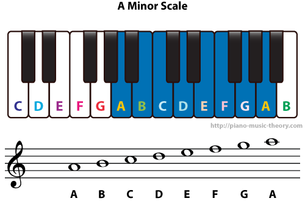
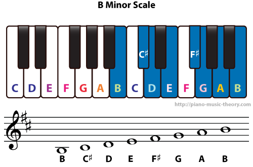
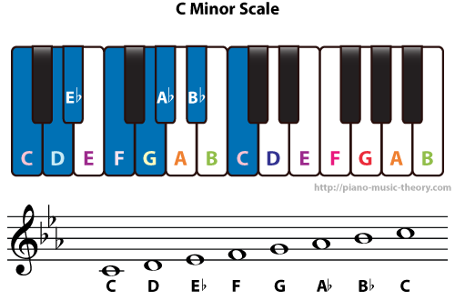
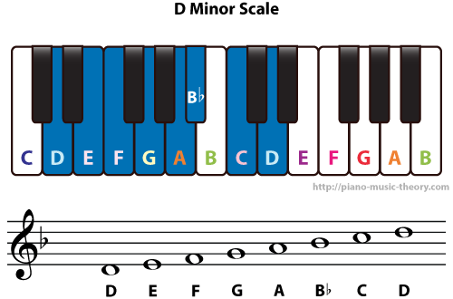
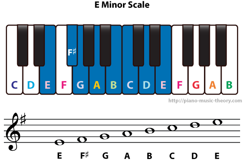
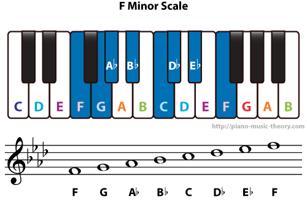
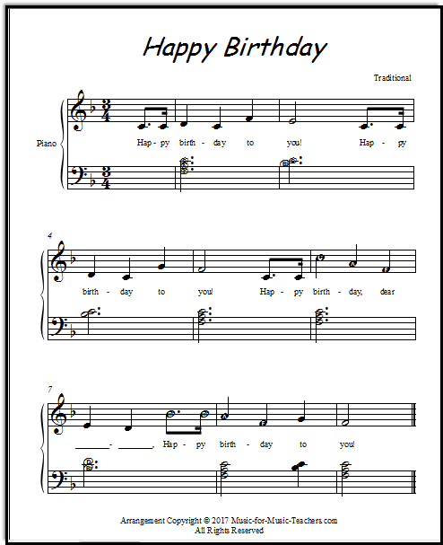
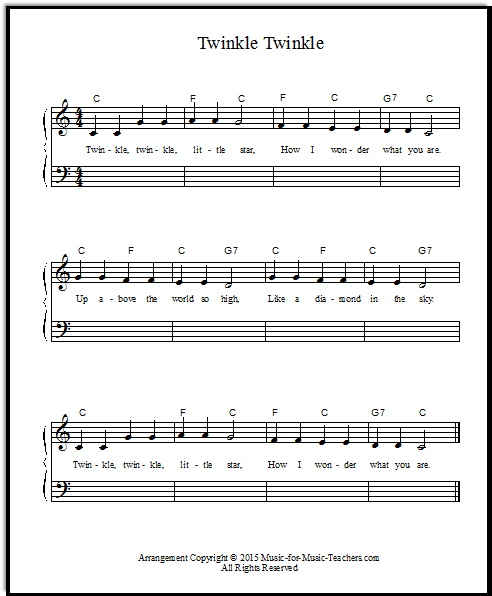

The origins of the piano date roughly to the 1700's where an individual named "Bartolomeo Cristofori" desgined and created an expansion for the harpsichord which gave it the ability to be played thoguh various lengthed strings that playing different chords depending on their length
One of the earliest iterations of the piano was made by Sebastion Erard. The piano was made so that a hammer would hit a string which allowed the note to play as well as putting the note back in its base position allowing for notes to consecuatively be repeated. This also allowed for the strings to produce more volume but made the frames of the piano to become heavier forcing the builders to make the piano cases out of iron bars and wooden timbers making the stucture more sturdy and taking away from the mobility of the piano
As times advanced over the years the piano was changed in many ways including the change in looks, sound and size. One of the earlier pianos called the "square" piano was a desk shaped piano with a cast iron plate and a wooden case. From there the grand paino was created and was the first piano with a strong base and the first piano to have 88 keys on it. After WWII pianos has a large jump in costs, design and uses. The main purpose of the piano was for lowercost hobby intrsuments that people played for their own purpose. The most current Pianos have three pianos steps that are called the soft pedal, sostenuto pedal and the sustaining pedal which are used for varying the sound of the notes played on the piano depending on what step you step on
In this section you will be taught the different keys of the piano.
There are 6 major notes to the Piano which include A,B,C,D,E and F. These 6 keys are are the 'basic keys' or the 'white keys' of the piano and are the base to every song. Each note in the piano varying from A-F each have a difference sound that they produce and depending on the song each section of keys might be flat on a different scale or 'minor'. For the songs that we play on the basics we will be using the A minor scale because its the best way to grasp the postion of the notes without using any if the black keys.
     A great way to remember the treble cleff is by looking at the notes from bottom to top and using the first letter of each word in the following phrase to denote the letter of the key you are pressing "each good boy deserves fudge" following the notes as "E G B D F" for the notes one the lines and the word "FACE" to show the following notes "F A C E" on the spaces.
music sheets can also have sapces in between the notes that that denote how long you are supposed to play a note for how how long the space inbetween the notes that you are supposed to play. This can be denoted by counting from 1-4 at a steady pace and that being the space inbetween a sereis a note (which is reguarly shown as a line between the msuic sheet that looks like '|')
For our examples of getting used to the notes we will be using a "a minor" and the "treble clef" system to play the notes.
To pratice a bit and get used to to the piano we're going to have you play a string of notes to get yourself familiar with the keys. Since everyone is familiar with the song happy birthday we're going to have you play happy birhtday on the piano at the pace you sing the song so you can become reguarlized with the pacing and notes
For our first test we're going to have you play the song twinkle twinkle little star and once you feel comfortable you can click on the link below to move back onto the main page to learn the basics of other instruments.
